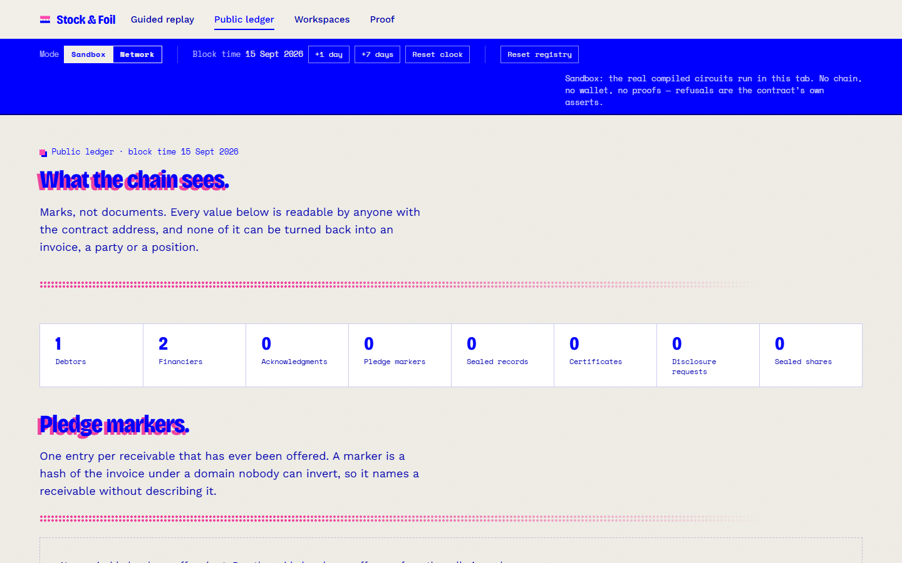
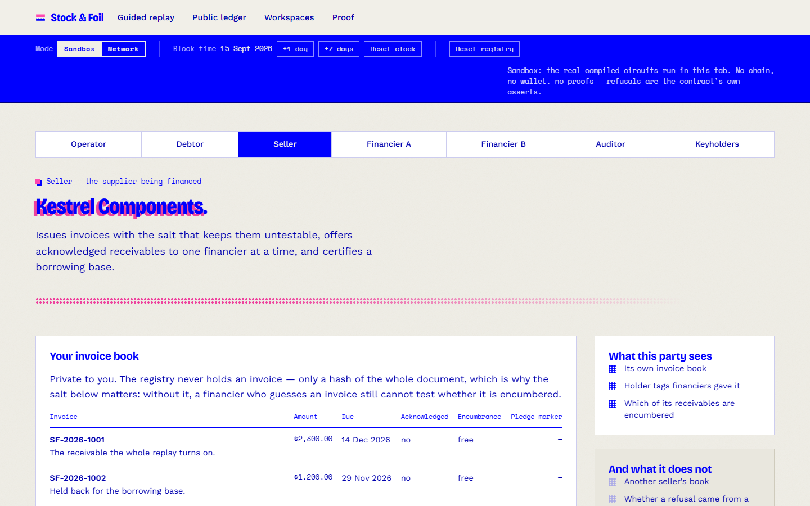
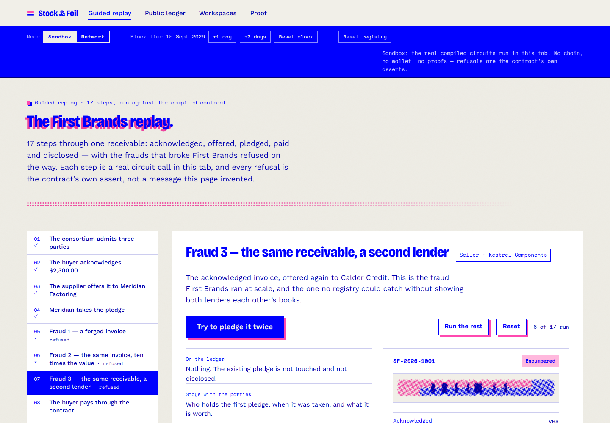

Option one
Show the other lender your invoices
An invoice file is a client list and a price list. Handing it to a rival costs more than the fraud does, so every financier keeps its book to itself — and the same receivable gets funded twice.
Stock & Foil
Private collateral registry for receivables finance · built on Midnight
Prove it without revealing it.
A collateral registry that proves things it cannot read. Suppliers pledge invoices, financiers check them, and the register refuses a forged, an inflated or a second pledge of the same receivable.
The public ledger holds nothing but commitments, one-time markers and sealed records.
Stock, kept by the lender · Foil, kept by the buyer · notches cut from 0x31e5…46f7 Compact 0.31.1 · 12 circuits · 171 tests
September 2025 · First Brands Group · Chapter 11
Source: Global Trade Review, on the receivables and
inventory finance fraud alleged against the founder.
First Brands filed for Chapter 11 carrying roughly $2.3 billion of receivables-finance liabilities. The invoices behind them are alleged to have been forged, inflated tenfold, and presented to more than one financier.
Three frauds, one shape: a receivable that is not what the lender was told it was, or is not the lender's to hold. On paper, each is indistinguishable from an honest one — and none of the financiers could have caught it by comparing notes, because there was no way to compare notes that cost less than the fraud.
Stock & Foil lets them check without showing each other anything.
There are exactly two ways to check whether a receivable is already financed, and receivables finance has rejected both for the same reason.
Option one
An invoice file is a client list and a price list. Handing it to a rival costs more than the fraud does, so every financier keeps its book to itself — and the same receivable gets funded twice.
Option two
Central fingerprint registries do work, and they ask every financier to trust one operator with the shape of its whole book — who its clients are, how much it lends, and when.
Midnight's dual ledger removes the trade-off. The checks run in zero knowledge against private state, and the public ledger holds only what uniqueness needs: a commitment, a one-time marker, a sealed record.
A receivable passes through four hands. Each hand proves something, and leaves a mark nobody else can read.
Every check runs while the transaction is being built. A fraudulent pledge cannot be proved, so it never reaches the chain at all — there is no bad state to roll back and no failed transaction to read.
A tally stick was split so that one half could not be forged against the other. These are the same idea, proved rather than whittled. The assert message in the contract is the product's refusal code, and the SDK and the interface carry it through unchanged.
Financing raised against an invoice the buyer never owed.
NOT_ACKNOWLEDGED
No acknowledgment leaf exists for this invoice, so the offer has no membership proof to make. There is no second half for it to match.
The buyer owes $2,300. The financier is shown $23,000.
NOT_ACKNOWLEDGED
The amount is inside what the buyer signed. A $23,000 invoice is a different commitment from the $2,300 on record, and nothing acknowledges it.
One receivable financed by several financiers at once.
ALREADY_ENCUMBERED
The one-time marker for this receivable is already spent. A stick that has been split cannot be split again.
The refused lender learns exactly one bit: this receivable is already encumbered. Not by whom, not for how much, not since when — and the existing pledge is neither touched nor disclosed.
Settlement is the one exception, and it is published under Honest limits rather than hidden.
The supplier salts the invoice before the buyer acknowledges it, so a financier who guesses an invoice still cannot test whether it is encumbered.
The explorer in the app reads the same projection an indexer does — and this band is the whole of it. Counts, markers, statuses, ciphertexts. There is nothing underneath to be careless with.

An insolvency practitioner has to be able to open a specific pledge. One party being able to do that would undo everything else.
the key
A 2-of-3 Shamir sharing of the disclosure key over the Jubjub scalar field. The constructor checks the sharing itself, in point form, and refuses a deployment whose ceremony would let one party read everything or no two parties read anything.
the share
A keyholder's share of the record key is computed inside the circuit and sealed to the auditor's key. No keyholder ever publishes anything another keyholder can use.
the check
The opened record recomputes the invoice fingerprint, the acknowledgment leaf and the pledge marker, so a doctored disclosure fails against the ledger's own value. The request and both approvals stay on the ledger: no record can be read without the reading being public.
Devnet run: approvals from keyholders 1 and 3 · the opened record recomputed marker 9450be64… and the ledger holds the same value.
An asset-based lender advances against a borrowing base. Today it gets a spreadsheet of line items and takes the borrower's word for the rest.
Each locked slot becomes an ordinary offer expiring with the certificate, which the lender takes up with the same accept it uses for a single invoice. Distinctness and the floor are proved before any slot is locked, so a pool that lists one invoice twice is refused for the duplicate rather than for an encumbrance it caused itself.
the certificate's own refusals, asserted in this order
BAD_EXPIRY DUPLICATE_CERTIFICATE EMPTY_POOL NOT_INVOICE_OWNER NOT_ACKNOWLEDGED INVOICE_OVERDUE DUPLICATE_INVOICE BELOW_FLOOR ALREADY_SETTLED ALREADY_ENCUMBERED BAD_EPHEMERAL
Each proved acknowledged, unencumbered, not yet settled and not overdue — the same four checks a single pledge passes.
A certificate that only asserted a total would be a promise. This one writes four pledge markers in the same transaction. What no circuit can check is that those markers are addressed to the lender the certificate names: a holder tag is derived from the lender's own secret, so the contract has nothing to test the seller's claim against. The lender recomputes every tag from public state before money moves.

The supplier's own book, in the app. The registry never holds an invoice — only a hash of the whole document.
Compact 0.31.1, language 0.23. Authorisation is always knowledge of a secret whose hash is on the ledger or inside committed data — never the caller's public key.
public state, readable by anyone
private state, never leaves the party
A fresh scalar e per record. E = e·G is published; the mask is Poseidon(S.x, S.y, j) over S = e·disclosurePk. Poseidon because a SHA-derived mask sits below 2248 and would leak the high bits of the 248-bit identities it pads. Records carry a version for that reason.
Twelve verifier keys total about 26 kB, and one transaction's byte budget takes six. The deploy carries six, then six VerifierKeyInsert maintenance transactions carry the rest. Seven transactions, and no address is published until every circuit has a key.
and beyond it
The simulator runs the compiled circuits without proving, so the whole suite finishes on a laptop with no Docker and no node. It is the same code path the browser sandbox uses, which is why the sandbox can refuse a fraud for real.
In the history, each behaviour is its own commit with the test that proves it — test(contract): the public transcript, and the limits that are not enforced.
One scenario for every refusal code the contract can raise, plus the lying witness: when no real Merkle path exists the witness hands back a dummy one, so the refusal comes from the circuit's assert and not from a JavaScript exception. That distinction is the test.
fast-check drives random lifecycles against a reference model. The invariants: at most one active pledge per invoice, a settled invoice is never pledgeable again, and proceeds are paid exactly once to the correct payee.
Threshold decryption is tested with every pair of keyholders — and with one share alone, and with the wrong auditor key, both of which must fail. An opened record that does not recompute the ledger's marker is a failure, not a warning.
A whole suite reproduces the leaks and griefing vectors the threat model admits, and another asserts value by value what each circuit publishes. "Not defended" is a measured statement rather than an assumption.
Nothing on this slide is typed by hand. It comes from the files the command-line tool wrote when it deployed the contract and ran the scenario against it.
A public Midnight testnet anyone can query without asking us for anything. Seven transactions: a constructor carrying six verifier keys, then one maintenance transaction for each remaining circuit, because twelve keys do not fit in one.
A node, an indexer and a proof server in Docker on one laptop. It shows the code runs but proves nothing to a stranger, and PROOF.md labels it that way.
Two NOT_ACKNOWLEDGED, then ALREADY_ENCUMBERED, NOT_PAYEE for a supplier reaching for pledged proceeds, and BELOW_FLOOR for an overstated pool. Each recorded as a refusal with no transaction to show for it, because there was none.
npm test 171 tests, no Docker, no node npm run verify:onchain reads the deployed contract through the public indexer and compares it with the evidence, field by field. No wallet, no proof server, and a non-zero exit on any mismatch.
The web app runs the real compiled circuits in the browser tab. No wallet, no install, no chain. Every refusal on screen is the contract's own assert, not a message the page invented.

The double pledge, refused in the browser tab.
The product is not the ledger and not the proof. It is the moment a financier is told no, by a register that could not have told it anything else.
buys the refusal
Buy invoices outright. The double pledge is their loss, and today they carry it as a credit-control cost.
buys the certificate
Advance against a borrowing base they cannot verify. A floor they can check is worth more than a spreadsheet they cannot.
carries the acknowledgment
Already sit between buyer and supplier, and already hold the buyer's approval. They are where the acknowledgment comes from.
buys the disclosure
Arrive after the failure and need to open specific records, with an opening nobody can dispute and everybody can see happened.
01
A supply-chain finance platform integrates the SDK. Its own book becomes the first registry — useful on day one, with no counterparty needed to start, because it already double-finances itself by accident.
02
A second financier joins because the first one can now refuse what it cannot see. Neither has to show the other anything, which is the only reason the second one can join at all.
03
The consortium operator admits members after off-chain KYB. The contract gives that operator no power to read a record, take a pledge, settle one or open a disclosure.
Nothing in the design needs a second member on day one — which is the only way a registry like this ever gets a second member.
Priced against the loss it prevents rather than the data it stores — because it stores none.
Every item below has a test that reproduces it, so "not defended" is a measured statement rather than an assumption.
The threat model names the attacker behind each of these, the property it breaks and the test that reproduces it. Both documents ship with the repository.
docs/THREAT-MODEL.md · docs/PRIVACY-BOUNDARY.md
contract/test/limits.test.ts · contract/test/transcript.test.ts
The contract is close to finished. What is not finished is the part that makes a registry worth joining: the other members.
Wave 1 · shipped
Everything a first member needs to get value out of the registry on its own.
Wave 2 · next
The friction that stops a real financier from trying it: a token to hold, a prover to install, one pledge at a time.
Wave 3 · after
The integrations that make the registry the place a pledge gets recorded, rather than a second system to remember.
A register with one member is a private database. The work after Wave 3 is the consortium — the operator, the admission rules and the second financier — not the contract.
Every invoice can be pledged once.
Prove it without revealing it.